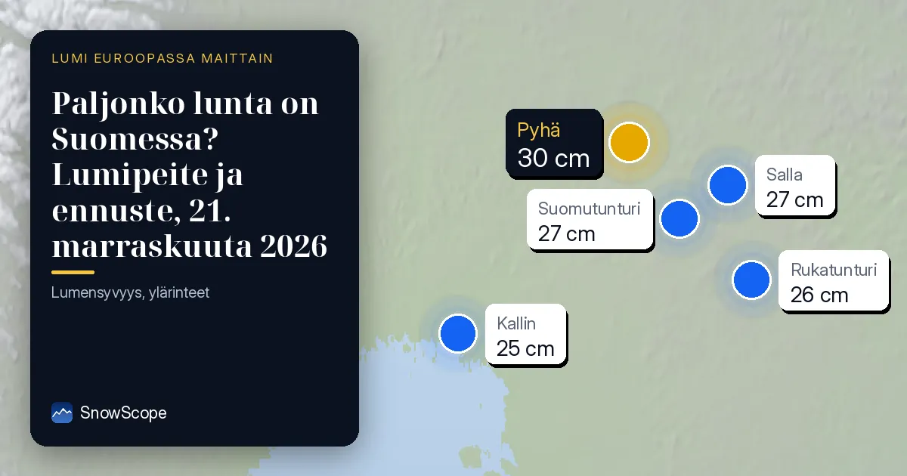

Paljonko lunta on Suomessa? Lumipeite ja ennuste, 21. marraskuuta 2026
Suomen lumiraja sijaitsee 100 m:n korkeudella. Tuolla korkeudella 77 % maasta on valkoista ja kasvaa. Alle sen sekoittunutta: ruohoa ja kiviä näkyy lumisirpaleiden välissä.
Katso kohteen Pyhä lumiennuste reaaliajassa SnowScope-sovelluksessaLumensyvyys, puuterihälytykset ja 3D-kartta, ilmaiseksi.
Missä lumi loppuu ja alkaa
Terävä viiva merkitsee lumirajaa Suomen poikki. 100 metrillä—noin helpoilla mäillä olevan korkeuden—valkoinen maasto ottaa vallan. Tämä merkitsee, koska suurin osa maan matalissa sijaitsevista hiihtokeskuksista istuu lähellä merenpintaa, missä ruskea ja vihreä hallitsevat edelleen. Korkeampi maasto sitä vastoin on kiinteän alustan alla.
21. marraskuuta Suomen kartoitetusta alueesta 232 900 km² on lumipeitteinen, hyppäys 35 690 km²:ssä vain yhdessä päivässä. Se on 77 % korkeasta maastosta, jonka SnowScope kartta mittaa.
| Hiihtokeskus | Lumensyvyys | Uusi lumi, 72 h | Tulossa, seuraavat päivät | Huippu |
|---|---|---|---|---|
| Pyhä | 30 cm | 3 cm | 0 cm | 375 m |
| Salla | 27 cm | 1 cm | 0 cm | 462 m |
| Suomutunturi | 27 cm | 1 cm | 0 cm | 400 m |
| Rukatunturi | 26 cm | 2 cm | 1 cm | 494 m |
| Kallin | 25 cm | 2 cm | 0 cm | 65 m |

Kolme kerrosta, kolme eri tarinaa
Lumensyvyys muuttuu jyrkästi korkeuden mukaan. 0–500 m:n välillä keskiarvo on vain 8 cm ja peitto on sirpaleinen 77 %:ssa. Ruoho pistää läpi, kivet näkyvät, ja rinnet pysyvät ohuina. 500–1 000 m:n välillä kaikki muuttuu: 16 cm keskimäärin ja 100 % valkoista. Ylärinteillä yli 1 000 m:n syvä pohja odottaa: 43 cm keskimäärin täydellä peitolla.
Hiihtokeskuksen käyttökelpoinen maasto riippuu sen huipun korkeudesta. Hiihtokeskukset, joiden huiput ovat yli 500 m:n, voivat avata rinnetta yläosassaan. Ne lähellä merenpintaa täytyy odottaa, että lumisadanta kertyy laaksoissa.

Millä hiihtokeskuksilla on nyt tarpeeksi
Pyhä johtaa 30 cm:llä, nousu 3 cm kolmessa päivässä. Salla on 27 cm (1 cm uutta lumea), Suomutunturi 27 cm (1 cm uutta lumea), Rukatunturi 26 cm (2 cm uutta lumea) ja Kallin 25 cm (2 cm uutta lumea). 67 seuratusta hiihtokeskuksesta 43:lla on lumi ylärinteillään.
Nämä viisi ovat kaikki edellä normaalinsa 21. marraskuuta. Pyhässä 30 cm tänään voittaa normaalin 20 cm:n 50 %:lla. Sallassa 27 cm ylittää tyypillisen 21 cm:n 29 %:lla. Rukatunturi istuu 32 % keskiarvon yläpuolella. Tämä varhaisen kauden vahvuus on harvinaista: tyypillisessä marraskuussa tämän korkeiset hiihtokeskukset pysyvät ohuina joulukuuhun asti.
Kuuma alue, joka selittää hyppäyksen
Yksi alue erottuu: Kainuun kukkulat saivat jopa 11 cm viimeisten 72 tunnin aikana. Tämä purskahdus työnsi koko maan kokonaismäärän jyrkästi ylöspäin. Yhdessä päivässä (20.–21. marraskuuta) Suomi sai 35 690 km² lumipeitettä—suurin yksittäisen päivän hyppäys tällä viikolla.
Noin 74 450 km² sai vähintään 5 cm kolmessa päivässä. Sunnuntai 22. marraskuuta on ennustettu lumentuottavimmaksi päiväksi, jopa 6 cm mahdollista. Seuraavien kolmen päivän aikana (24. marraskuuhun asti) odotetaan jopa 8 cm; seuraavalla koko viikolla jopa 8 cm uudelleen.
Mitä tulee seuraavaksi
Lähiaikakausi (seitsemän päivää) tuo vaatimattomia kokonaismääriä mutta tasaista kertymää. Lokakuun alussa tahti hidastuu: päivät 8–14 (marraskuun lopusta joulukuun alkuun) tarjoavat vain noin 4 cm. Tämä ikkuna tarkoittaa, että hiihtokeskukset voivat avata rinteensä nopeasti seuraavien päivien aikana, jos kylmyys säilyy.
Valkoinen alue 21. marraskuuta (232 900 km²) on suunnilleen sillä tasolla, missä se oli viikko sitten (236 430 km²), joten maan kokonaislumisuus on vakiintuneet aikaisempien vaihtelujen jälkeen. Viikko viikolta: 16. marraskuuta 157 360 km²; 20. marraskuuta 192 860 km²; 21. marraskuuta 232 900 km².
Kuinka Suomi vertautuu
Naapurit kertovat eri tarinaa. Ruotsi on 95 % valkoinen, Björklidenia 138 cm ja 12 cm ennuste viikon aikana. Norja on 92 % valkoinen, Riksgränsenissa 167 cm ja 26 cm ennuste. Suomen 77 % peitto ja 25–30 cm syvyydet huippuhiihtokeskuksissa asettavat sen hyvin pohjoismaisten huippujen taakse, mutta nopea kasvu tällä viikolla näyttää kauden rakentuvaksi nopeasti.
Hiihtäjille avain on, että korkea maasto on nyt valmiina, kun taas alemmat rinteen jäävät uhkapeliin. Suunnittele rinne yli 500 m:n jatkuvaksi pohjaksi; alle tuon korkeuden, odota lumisirpaleita sekoittuneina näkyvän maastoon.
Vinkkejä laskijoille
- Hiihi yli 500 m:n, missä maasta on täysin valkoista. Alle tuon korkeuden, maasto on sirpaleinen ja kivet voivat tarttua suksiinsa.
- Tarkista hiihtokeskuksesi hissin tila ja avautumispäivämäärä ennen matkaa; lumi kartalla ei tarkoita rinnetta, että piste ovat valmiina.
- Tuore lumi kylmällä pohjakonditiolla voi olla liukas jyrkässä maastossa. Varo etelään päin katsovilla rinteillä iltapäivän auringon alla.
- Viikon päästä olosuhteet paranevat entisestään, jos ennustettu lumi putoaa. Lokakuun alkuun tahti hidastuu, joten tämä viikko on ikkuna parhaimmille varhaisen kauden voitoille.
- Aamun lumi on lujinta selkeän yön jälkeen; odota auringon pehmentävän ylärinteita ennen hiihtämistä siellä.
Näistä luvuista
Hiihtokeskusten lumensyvyydet ovat syvin lumi keskuksen ylärinteillä näytettynä päivänä; ne ovat arvioita alueelle, eivät mittaus yhdessä pisteessä. Ennusteet voivat muuttua. Lue aina virallinen lumivyöryennuste ennen rinteiden ulkopuolelle lähtöä.
Viittaa tähän raporttiin
Tutkimukseen, opetukseen tai mediaan: luvut ja kaaviot ovat vapaasti käytettävissä CC BY 4.0 -lisenssillä tällä lähdeviitteellä.
SnowScope (2026), Paljonko lunta on Suomessa? Lumipeite ja ennuste, 21. marraskuuta 2026, https://snowscope.app/blog/fi/2026/11/finland-snow-line-21-november-2026.html, luettu 2026-11-21
SnowScope (Atlas Labs). (2026, November 21). Paljonko lunta on Suomessa? Lumipeite ja ennuste, 21. marraskuuta 2026. SnowScope snow reports. https://snowscope.app/blog/fi/2026/11/finland-snow-line-21-november-2026.html
BibTeX
@misc{snowscope2026finlandsnowline21novembe,
author = {{SnowScope (Atlas Labs)}},
title = {Paljonko lunta on Suomessa? Lumipeite ja ennuste, 21. marraskuuta 2026},
year = {2026},
month = nov,
howpublished = {\url{https://snowscope.app/blog/fi/2026/11/finland-snow-line-21-november-2026.html}},
note = {Published 2026-11-22 10:03 UTC; accessed 2026-11-21}
}· CC BY 4.0 · Menetelmät, data ja työkalut →
Pyhä: lumi ja lämpötila korkeuden mukaan, tämä talvi ja viime talvi (työkalut) →
Seuraa: Pyhä
Ilmainen: viesti, kun uutta lunta on tulossa, ja ennuste joka aamu.